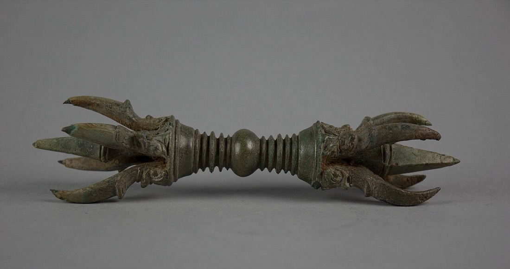
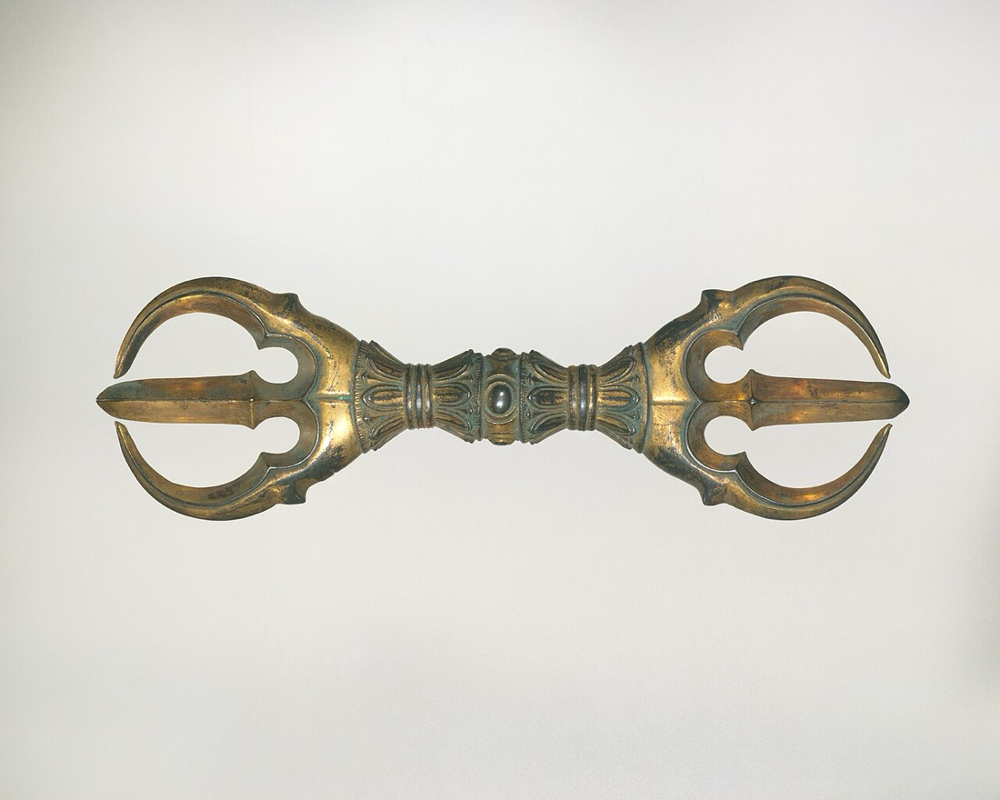
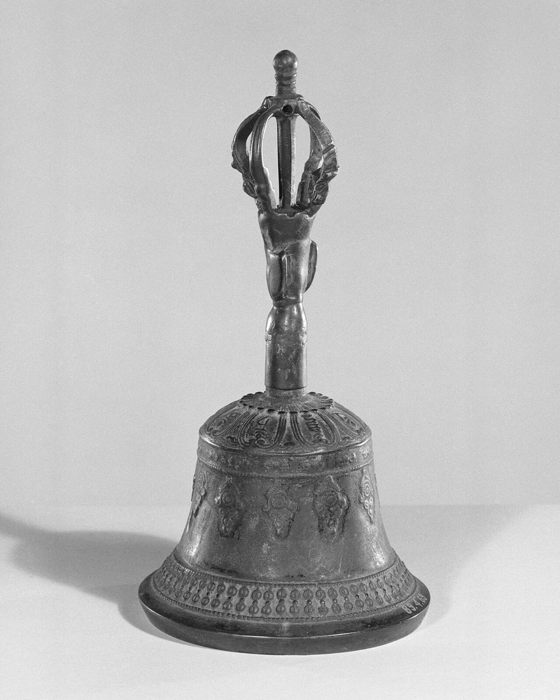
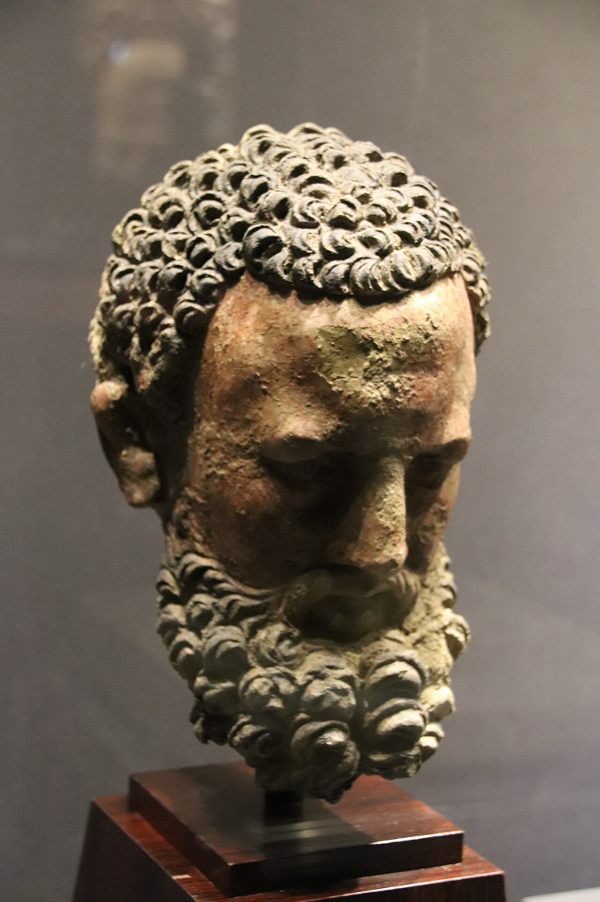
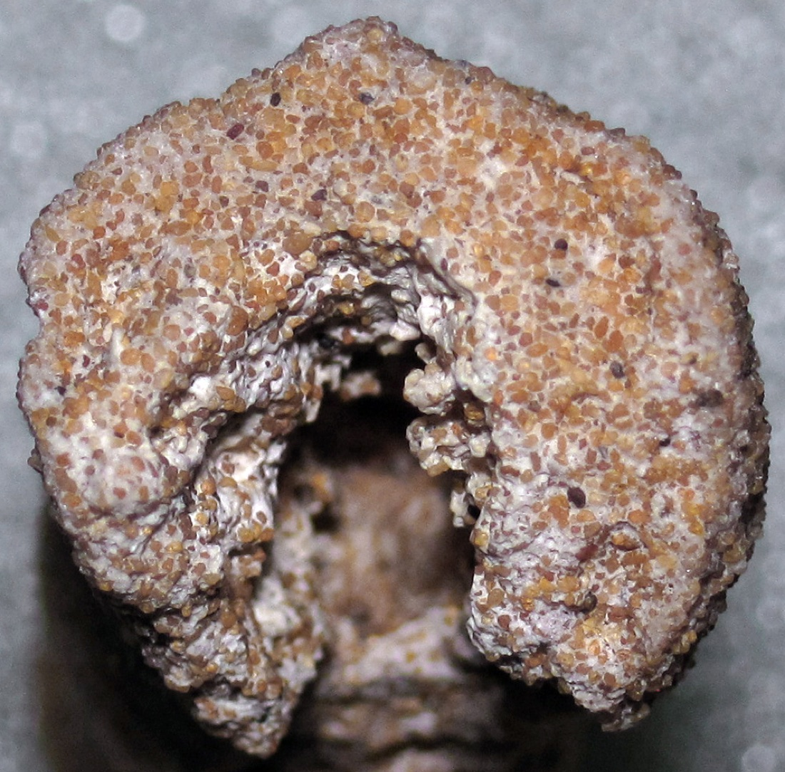
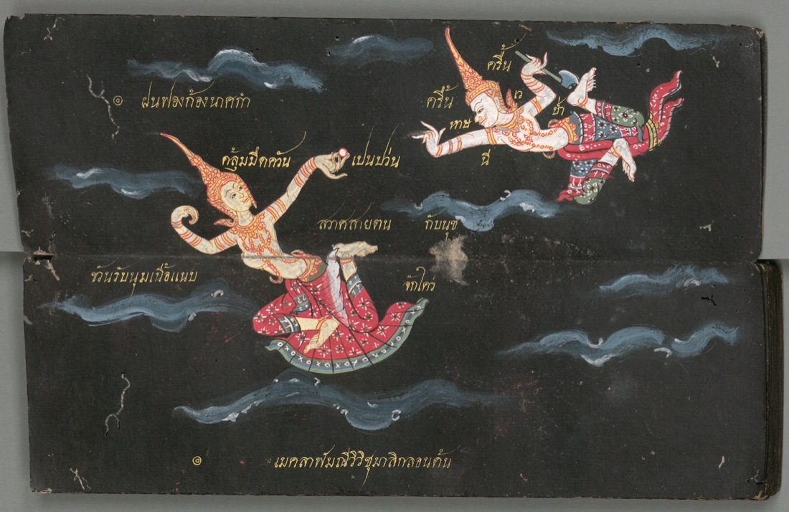
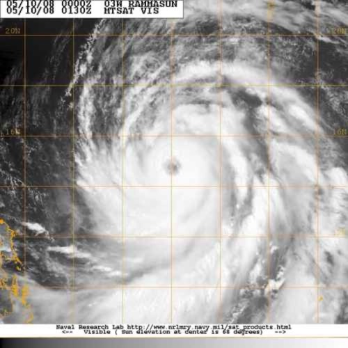
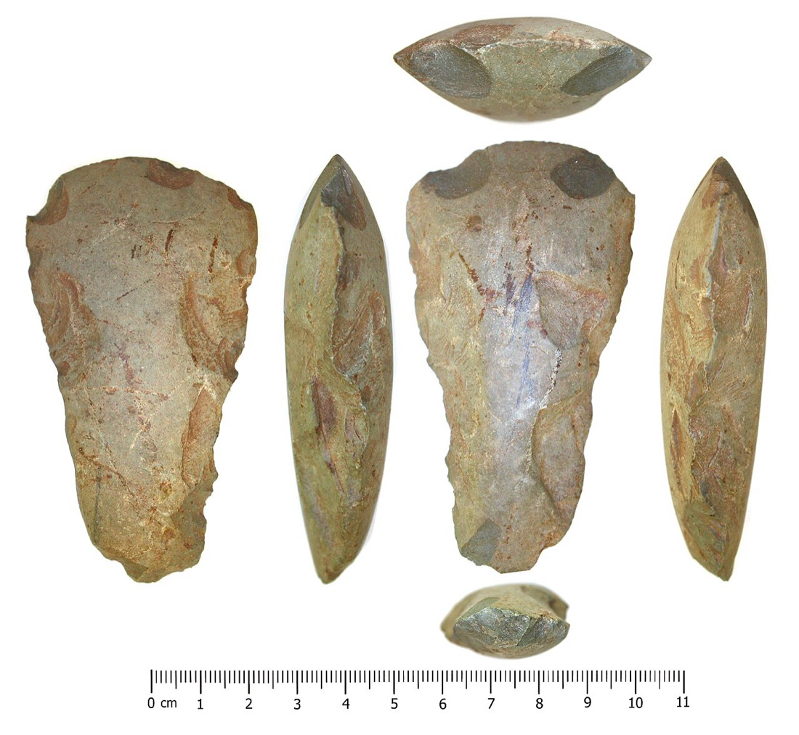
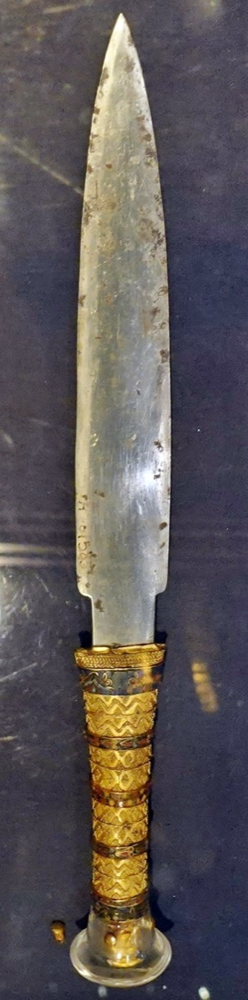

A 'splainer · drawn with math
Cosmic Weaponry, Drawn
Gods don't carry swords from the hardware store. They carry thunder, sun-dust, sky-iron and diamond. Here's what each one is, where the story comes from, and the arithmetic hiding in it.
อาวุธเทพ วาดด้วยคณิต · vajras, bolts, sky-axes and sun-dust
nanobotco.github.io/cosmic-weaponry
Before we start
What makes a weapon cosmic
Folks in every corner of the world looked up at a storm and figured somebody up there was armed. Lightning got to be a spear, a hammer, an axe, a club with a diamond on each end. The sun got to be a wheel with a sharp edge. Iron that fell out of the sky got made into daggers for kings.
So a cosmic weapon is mostly weather and sky, with a god's hand wrapped around it. That's good news for us, because weather and sky obey arithmetic. Every picture on this page is computed while you watch, and most of 'em you can poke.
The stories come from the Rigveda, the Puranas, the Mahabharata, Thai dance and manuscript painting, Hesiod, Snorri's Edda and Journey to the West. Where a story has more than one telling, we say which one.
Indra's thunderbolt · วชิระ
The vajra: thunderbolt and diamond in one word
In the Rigveda, the oldest of the Hindu scriptures, the smith-god Tvashtr makes Indra a weapon called the vajra. Indra takes it to Vritra, a serpent who's coiled around the world's waters and won't let 'em go, and strikes him dead. The rivers run again. Put plainly: the storm god hits the drought and the rain comes.
Later tellings in the Puranas add a sadder start. Nothing ordinary can kill Vritra, so the gods ask the sage Dadhichi for his bones. He gives 'em, and the vajra is made out of a holy man's backbone.
Here's the part the drawing likes: in Sanskrit vajra means both thunderbolt and diamond. The thing nothing can break, and the thing that breaks everything. The shape shows both: a hard ball in the middle, a lotus on each side, and prongs that bend out and come back to meet at a point, like a storm folding in on itself.
Each outer prong is one curve, copied around the shaft every 360°/n. Five prongs means the vajra looks the same after a fifth of a turn.
The Buddhist turn · วัชรยาน
A weapon that turned into a prayer
Buddhism kept the vajra and changed the job. In Tibet and Nepal a monk holds a small vajra (Tibetan dorje) in the right hand and a bell (drilbu, Sanskrit ghanta) in the left. Teachers say the vajra stands for method and compassion, the bell for wisdom, and you need the pair. A whole school is named for it: Vajrayana, the diamond vehicle.
The Diamond Sutra's Sanskrit name is Vajracchedika, the one that cuts like a vajra: wisdom that slices through wrong ideas. In Japan the same tool is the kongosho; the three-pronged one below is a sankosho.
The Buddha even got a bodyguard who carries one, Vajrapani, "vajra in hand". Up in Gandhara, where Greek sculptors had settled after Alexander, they carved Vajrapani looking like Heracles, lion-skin and all.
In Thailand Indra is Phra In, and one of his names is วชิราวุธ, "whose weapon is the vajra". Brass vajra pendants sold as "Phra In's weapon" show up in wichaa's shop listings at ฿39 to ฿89.
A bell's overtones don't sit at whole-number steps the way a guitar string's do. This one rings at about 1 : 2.7 : 5.1 : 8.2 of its lowest tone, the rough pattern of a bowl or bell, and the waves beat against each other. That's the shimmer.








Physics · ฟ้าผ่า
Grow a bolt, one step at a time
Now the weather itself. A lightning channel is a few centimetres across and gets hotter than 27,000 °C, around five times the surface of the sun. It doesn't go straight because the air doesn't break down evenly. The bolt feels its way down in short hops, and each hop goes where the electric pull is strongest, with a little luck thrown in.
In 1984 three physicists, Niemeyer, Pietronero and Wiesmann, turned that into a rule you can run. Work out the electric pull at every spot next to the bolt. Pick the next spot at random, weighted by that pull raised to a power η. Add it. Do it again. When the bolt touches ground, the path back up lights up: that's the return stroke, the flash you see.
Set η low and the bolt grows bushy, like frost. Set it high and it runs nearly straight for the ground. Somewhere near 1 it branches like lightning in a photograph, and its fractal dimension comes out around 1.7, close to measured bolts. If fractals are your thing, the fractals 'splainer has more.
Every grown spot is a cell in a grid; the pull is worked out by relaxing the grid over and over until it settles. Dimension is a box count: how the number of boxes the bolt touches changes as the boxes shrink.


The Thai storm · เมขลา–รามสูร
Mekhala's jewel and Ramasun's axe
Thai grandparents tell it this way. Up in the clouds, Mekhala, keeper of the seas, plays with a magic jewel, tossing it and flashing it. The giant Ramasun wants that jewel bad. He hurls his diamond axe at her. She flashes the jewel in his eyes, and the axe misses. The flash is lightning. The crash of the axe is thunder. The pair dance it on the Thai stage, and they've opened shows since Ayutthaya times.
Notice the order: flash first, crash after. That part's dead right. Light covers a kilometre in about three millionths of a second. Sound needs about three seconds. So count from the flash to the boom, divide by three, and you've got kilometres to the strike. (In miles, divide by five.)
Count it yourself
Sound speed taken as 343 m/s, air at 20 °C. Thunder carries roughly 15–25 km on a quiet night, so past about a minute you won't hear it at all.
Thailand gave both names to the list for Pacific storms: there have been typhoons called Rammasun and storms called Mekkhala.




Stones and iron from the sky · ขวานฟ้า
Sky-axes and a king's star-iron dagger
Farmers ploughing a field would turn up a smooth, sharp stone shaped like an axe head. Where'd it come from? Down with the lightning, they reckoned. Thai has a word for it, ขวานฟ้า, sky-axe, and the Royal Institute dictionary says it straight: a stone axe from the Stone Age, believed to fall from the sky when lightning strikes. The Romans called 'em ceraunia; Pliny wrote they were found only where a thunderbolt had hit. In Java they're "lightning's teeth". In France folks tucked 'em under the doorsill to keep the house from burning.
They're tools, of course: Neolithic axes, ground and polished by people thousands of years back. But some weapons did come from the sky. The iron dagger buried with Tutankhamun, 3,300 years ago, was tested in 2016 with X-rays. Its blade is about 10.8% nickel and 0.58% cobalt. Iron smelted from ore on Earth runs 4% nickel or less. That blade is a meteorite.




Cut a nickel-iron meteorite, polish it, wash it in acid, and a criss-cross of long crystal bands appears, the Widmanstätten pattern. It grows only when the metal cools somewhere between a tenth of a degree and ten degrees every thousand years, deep inside an asteroid. No forge on Earth can wait that long.
Verdict
The bands follow the faces of an octahedron, so a flat slice cuts them in three or four directions depending on the angle. More nickel makes thinner bands. Under about 6% nickel or over about 16%, a meteorite shows no bands at all.
Ground off the sun · จักรและตรีศูล
A discus and a trident, ground off the sun
The Vishnu Purana has a family story. Sanjna, daughter of the divine craftsman Vishvakarma (Thai: พระวิษณุกรรม), is married to the Sun, and she can't stand the glare. So her daddy puts the Sun on his lathe and grinds some of the shine off him. He gets an eighth. The rest won't come off.
Out of that glowing dust he makes four things: Vishnu's discus, the Sudarshana chakra; Shiva's trident, the trishula; the flying palace Pushpaka (Thai: บุษบก); and the spear of Skanda.
A disc's light goes with its area, the square of its radius. Take off an eighth of the light and the radius only shrinks to √(7/8), about 93.5% of where it started.
Thai readers have seen two of those every day without thinking of the sun. The emblem of the Chakri dynasty is a discus with a trident through it: Vishnu's weapon and Shiva's, made from the same sun-dust.
Smiths of the gods · ค้อนและสายฟ้า
Forged by one-eyed giants and a pair of dwarfs
In Greece, Hesiod's Theogony tells it: Zeus frees the Cyclopes, and they make him the thunderbolt. Their names are the weather report: Brontes, Thunder; Steropes, Lightning; Arges, Bright.
Up north, Snorri's Edda tells how Loki bet his head that the dwarf brothers Eitri and Brokkr couldn't out-make another smith. Eitri worked the fire, Brokkr pumped the bellows and must not stop. A fly (Loki in disguise, most folks figure) bit Brokkr's hand, then his neck, then his eyelid, and on that last bite he let go of the bellows for a breath. The hammer came out with its handle too short. That's Mjölnir, and it still won the bet: it hits anything, and it comes back to Thor's hand.
Your turn. Hold the bellows down. The fly'll come. Every moment you let go costs the handle.
The handle starts at 60 cm and loses length for every tenth of a second the fire goes untended. A thrown hammer comes home along a loop: out, around, back, a curve called a limaçon.
The Monkey King · กระบองซุนหงอคง
Eight tonnes that fit in an ear
In chapter 3 of Journey to the West, Sun Wukong, the Monkey King, goes down to the Dragon King of the Eastern Sea shopping for a weapon. He finds an iron pillar stamped with its own weight: 13,500 jin. In the Ming dynasty a jin ran about 600 grams, so that's around 8 tonnes. It shrinks or grows on his word. He first shrinks it to a bit taller than himself and as thick as a rice bowl, and when he's not fighting it's a needle tucked inside his ear.
The weight doesn't change. So squeeze 8 tonnes into a smaller staff and it gets denser. Slide it and watch: stretched up toward heaven it's lighter than air; as the pillar in the sea it's a little lighter than iron; in his hand it's sixteen times as dense as osmium, the densest metal; as a needle it outdoes the core of a white dwarf star. The black holes 'splainer picks up from there.
Mass held at 13,500 × 0.597 kg = 8,057 kg. The staff keeps the same shape as it shrinks, a rod 12 times as long as it is wide, about its shape in his hand, so its volume goes with the cube of its length.
The rack · คลังอาวุธ
More from the armoury
One line each, with where the story lives.
Thunderbolt and diamond. Made by Tvashtr in the Rigveda; from Dadhichi's bones in the Puranas.
A spinning discus with a sharp rim, ground from the sun. Vishnu Purana 3.2.
The trident, from the same sun-dust. Three prongs, read as three of almost anything.
The thunderbolt the Cyclopes made him. Hesiod, Theogony.
Short handle, never misses, comes home. Snorri's Edda.
A spear made by the sons of Ivaldi, from the same contest as the hammer.
13,500 jin, grows or shrinks on command. Journey to the West, ch. 3.
Thrown at Mekhala; its crash is the thunder. Thai dance and painting.
Flashed in the giant's eyes; its light is the lightning.
A weapon called down with a verse, too strong to use lightly. Mahabharata.
The bow Arjuna gets from the fire god Agni before the Khandava forest burns. Mahabharata.
A sword found in the tail of the eight-headed serpent Orochi. Kojiki, 712.
Words
Sanskrit for thunderbolt and for diamond; Indra's weapon, and a Buddhist ritual tool.
Tibetan word for the vajra.
The ritual bell held with the vajra; Sanskrit and Tibetan names.
"Diamond vehicle": the Buddhism of Tibet, Nepal, Mongolia and Japan's Shingon school.
The serpent who held back the waters in the Rigveda; Indra killed him with the vajra.
The bright flash that runs back up the channel once a lightning leader touches ground.
A number between 1 and 2 for a branching line: how much of the plane it fills as you look closer.
A tube of glass made where lightning melts sand or soil.
A prehistoric stone axe believed to have fallen with lightning, kept as a charm.
Iron-nickel metal that fell from space; Earth iron from ore has far less nickel.
Criss-cross crystal bands in etched iron meteorites, grown by very slow cooling.
Vishnu's spinning discus.
Shiva's trident.
A Chinese weight; about 600 g in the Ming dynasty, 500 g today.
A looping curve r = b + a·cos θ; here, the path of a hammer that comes back.
Sources
Stories from translations of the texts named; numbers from the papers and agencies below; pictures from Wikimedia Commons with their licences.
- Wikipedia: Vajra
- Wikipedia: Vritra
- Wikipedia: Dadhichi
- Wikipedia: Ghanta
- Wikipedia: Diamond Sutra
- Wikipedia: Vajrapani
- Thailex: วชิราวุธ, and Mekhala
- Niemeyer, Pietronero & Wiesmann (1984), Fractal dimension of dielectric breakdown, Phys. Rev. Lett. 52, 1033
- Yale Fractal Geometry: the dielectric breakdown model
- National Geographic: Flash facts about lightning
- ศิลปวัฒนธรรม: เมขลา-รามสูร กับ ขวานรามสูร
- ศิลปวัฒนธรรม: อดีตชาติของรามสูร ผู้มีขวานเป็นอาวุธ
- Wikipedia: Manimekhala
- Wikipedia: List of storms named Rammasun
- Wikipedia: List of storms named Mekkhala
- Wikipedia: Thunderstone (folklore)
- Royal Institute dictionary entry ขวานฟ้า, via wichaa's lexicon
- Comelli et al. (2016), The meteoritic origin of Tutankhamun's iron dagger blade, Meteoritics & Planetary Science 51, 1301
- Eos: Pharaoh's iron dagger made from a meteorite
- Wikipedia: Widmanstätten pattern
- Vishnu Purana, Book 3 Chapter 2, trans. H. H. Wilson
- Wikipedia: Sudarshana Chakra
- Wikipedia: Chakri dynasty
- Hesiod, Theogony, trans. A. S. Kline
- Wikipedia: Sindri (mythology) — Skáldskaparmál's forging contest
- Wikipedia: Ruyi Jingu Bang
- Journey to the West Research: the weight of the Monkey King's staff
- Wikipedia: Gungnir
- Wikipedia: Gandiva
- Wikipedia: Brahmastra
- Wikipedia: Kusanagi
- วิกิพีเดีย: วชิระ
- Wikimedia Commons